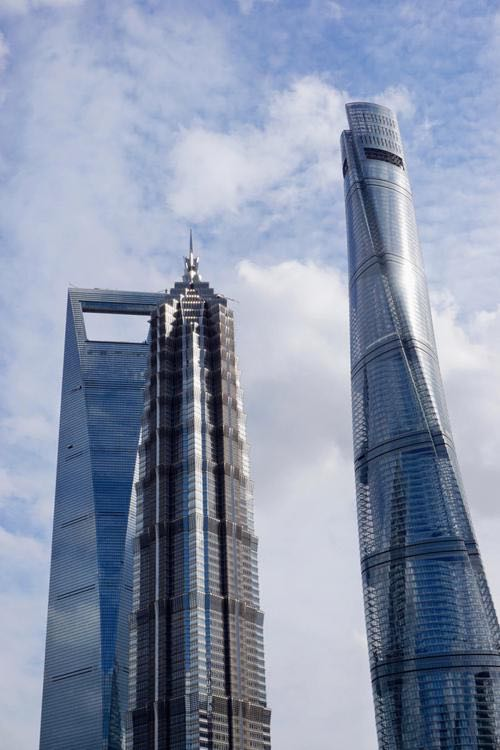
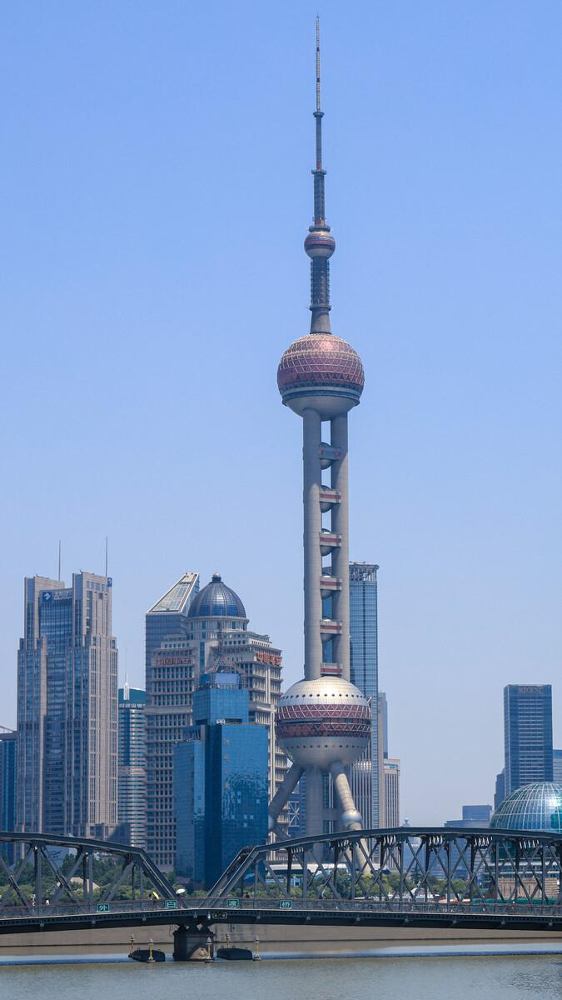
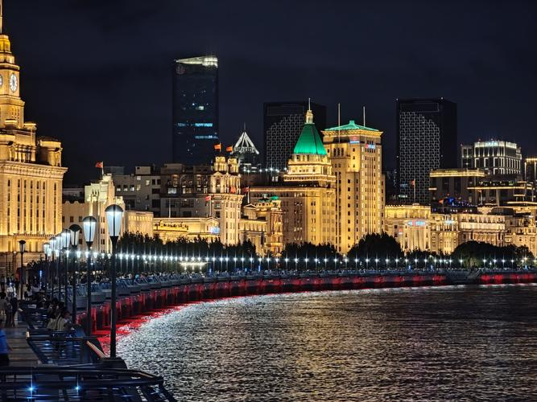
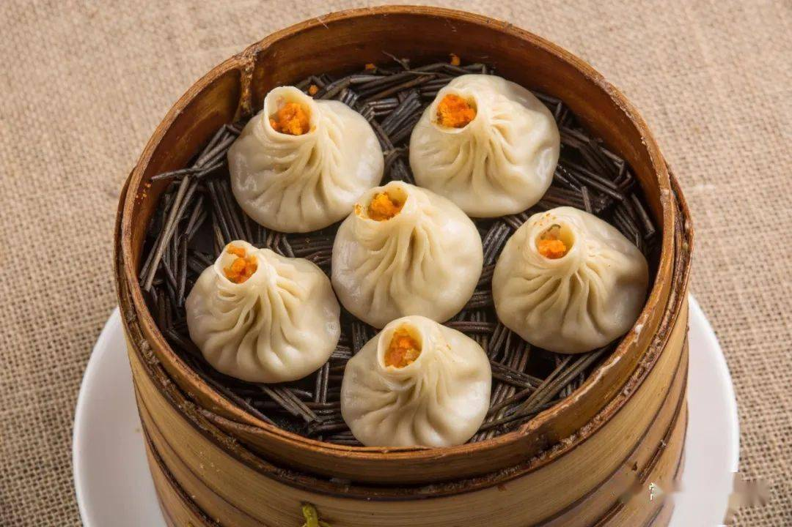
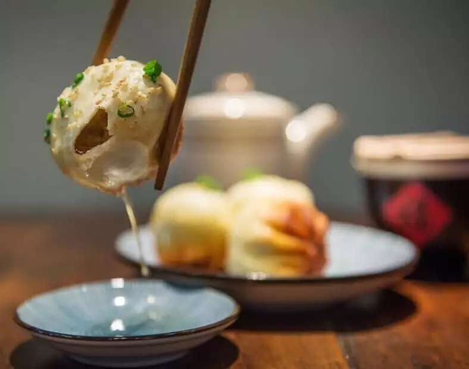
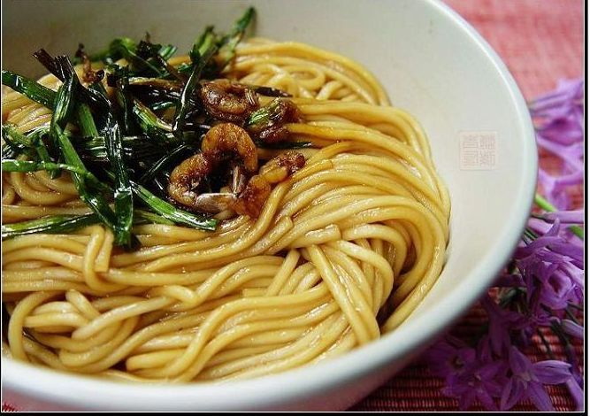

Short Introduction
Shanghai, the dazzling Pearl of the Orient, is the symbol of modern China, where the future meets tradition. This bustling metropolis is a global financial and cultural centre with a long history.
Famous Tourism
The Oriental Pearl Tower
The Oriental Pearl Tower, an architectural marvel and symbol of Shanghai, stands majestically along the city's skyline. This iconic structure, soaring to a height of 468 meters, is one of the tallest in Asia, offering breathtaking panoramic views of the sprawling urban landscape. Built in 1994, the tower's unique design features eleven spheres of various sizes, suspended along its length, resembling pearls shining over the Huangpu River. The tower is not only a sightseeing attraction but also a multifunctional facility, housing a revolving restaurant, a shopping area, and exhibition facilities. By night, the tower transforms into a luminescent spectacle, with LED lights illuminating its structure in a dazzling array of colors, reflecting the dynamic spirit of Shanghai. The Oriental Pearl Tower is more than just an architectural feat; it's a cultural icon, representing the fusion of Shanghai's historic past and its futuristic aspirations.
The Bund
The Bund in Shanghai, a famed waterfront promenade, is a striking testament to the city's historical and architectural legacy. Stretching along the western bank of the Huangpu River, this iconic area is lined with colonial-era buildings, reflecting diverse architectural styles like Baroque, Gothic, and Neoclassical. Once the financial heart of old Shanghai, the Bund now serves as a symbolic bridge between the city's storied past and its dynamic present. By day, it's a bustling hub of activity; by night, it transforms into a magical landscape, with the illuminated skyline of Pudong creating a stunning backdrop. The Bund is not just a tourist attraction, but a cherished emblem of Shanghai's rich and complex history.
Featured Food
Xiaolongbao
One of Shanghai's most famous dim sum, Xiaolongbao are small steamed dumplings filled with meat and/or vegetables, and most unusually, contain a flavour broth.
Shengjianbao
similar to xiaolongbao, but the bottom is fried to a golden crisp and the top is steamed, containing meat and soup.
Scallion Oil Noodles
A simple but very flavour noodle dish that consists of noodles tossed in fried scallion oil and sauce.